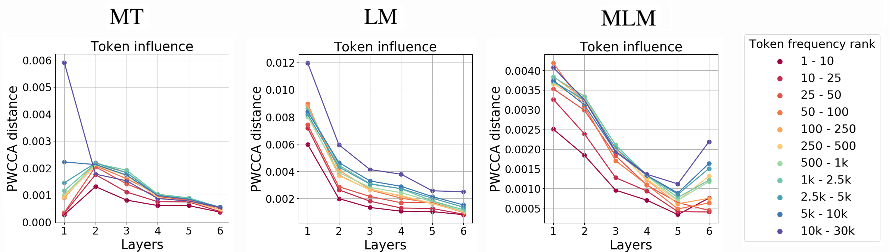

This is a post for the EMNLP 2019 paper
The Bottom-up Evolution of Representations in the Transformer: A Study with Machine Translation and Language Modeling Objectives.
This is a post for the EMNLP 2019 paper
The Bottom-up Evolution of Representations in the Transformer: A Study with Machine Translation and Language Modeling Objectives.
We look at the evolution of representations of individual tokens in Transformers trained with different
training objectives (MT, LM, MLM - BERT-style) from the
Information Bottleneck
perspective and show, that:
- LMs gradually forget past when forming predictions about future;
- for MLMs, the evolution proceeds in two stages of
context encoding and token reconstruction;
- MT representations get refined with context,
but less processing is happening.
 September 2019
September 2019
Introduction
Recently, analysis of deep neural networks
has been an active topic of research. While previous work mostly used so-called 'probing tasks' and
has made some interesting observations
(we will mention some of these a bit later),
an explanation of the process behind
the observed behavior has been lacking.
In our paper, we attempt to explain more generally why such behavior is observed.
Instead of measuring the quality of representations obtained from a model on
some auxiliary task, we characterize how the learning objective determines the information
flow in the model. In particular, we
consider how the representations of individual tokens in the Transformer evolve between layers
under different learning objectives. We look at this task
from the information bottleneck perspective on learning in neural networks.
In addition to
a number of interesting results which give insights into internal workings of Transformer
trained with different objectives, we try to explain the superior performance of the MLM (BERT-style)
objective over the LM one for pretraining.
Tasks: MT, LM, MLM (aka BERT)
We consider three tasks.
 Machine Translation (MT)
Machine Translation (MT)
Given a source sentence  and a target sentence
and a target sentence  , NMT models
predict words in the target sentence, word by word, i.e. provide estimates of the conditional distribution
, NMT models
predict words in the target sentence, word by word, i.e. provide estimates of the conditional distribution
 .
.
We train a standard Transformer and then take only it's encoder. In contrast to the other two tasks
we describe below, representations from the top layers are not directly used to predict output labels
but to encode the information which is then used by the decoder.
 Language Modeling (LM)
Language Modeling (LM)
LMs estimate the probability of a word given the previous words in a sentence:
 . Formally, the model is trained
with inputs
. Formally, the model is trained
with inputs  and outputs
and outputs
 , where
, where
 is the output label
predicted from the final (i.e. top-layer) representation of a token
is the output label
predicted from the final (i.e. top-layer) representation of a token
 .
.
 Masked Language Modeling (MLM)
Masked Language Modeling (MLM)
The last objective we consider is the MLM objective, which
is (most of) the training objective of BERT.
In training, 15% of tokens are sampled to be predicted. Each of the sampled tokens is replaced with
a special [MASK] token or a random token in 80% and 10% of
the time, respectively, and unchanged otherwise.
For a sentence  ,
where token
,
where token  is replaced with
is replaced with
 , the model receives
, the model receives
 as input and needs to
predict
as input and needs to
predict  . The label
is predicted from the final
representation of the token .
. The label
is predicted from the final
representation of the token .
What we are interested in,
or How Representations Evolve and the Underlying Process Defining this Evolution
 For all models, we fix model hyperparameters, training data, and parameter initialization.
The only thing which is different is the training objective.
For all models, we fix model hyperparameters, training data, and parameter initialization.
The only thing which is different is the training objective.
All three models start from the same representation of a token in a sentence, which consists of
an embedding of a token
identity and its position. But the way information flows across layers, or the evolution of a token
representation, is different depending on the objective. And this is our main interest.
We hypothesize that the training procedure (or, in our notation, task) defines:
- the nature of changes a token representation undergoes, from layer to layer;
- the process of interactions and relationships between tokens;
- the type of information which gets lost and acquired by a token representation in these interactions.
The nature of our work is quite unusual. We are going to have a lot of experiments and we’ll
see a lot of results. Despite that these results alone are quite interesting (in terms of methods,
things we look at, conclusions we make; to be honest, there is nothing standard in what we do here :) ),
the work itself is not about the results. The most important in what we do, as I see it, is
we suggest you a point of view, a way of looking at these results.
This is something not seen by the naked eye, hidden inside; this is the underlying process
which defines
not only the results observed in our work but also some previous works.
Our Point of View: Information Bottleneck
TL;DR: the Evolution is in Squeezing Irrelevant Information About Input While Preserving Relevant
We view the evolution from the
Information Bottleneck (IB)
perspective.
The Information Bottleneck method aims to extract a compressed representation of an input which
retains as much as possible information about an output. It maximizes mutual information with the output
while penalizing the MI with the input:
 .
.
 The work by Tishby and Zaslavsky argues that
computation in multi-layered networks can be
regarded as an evolution towards the theoretical optimum of the IB objective.
The network is moving the information about input trough a cascade of layers,
and this process is considered as a Markov chain. The bottleneck is in squeezing
irrelevant information about input while preserving relevant.
The work by Tishby and Zaslavsky argues that
computation in multi-layered networks can be
regarded as an evolution towards the theoretical optimum of the IB objective.
The network is moving the information about input trough a cascade of layers,
and this process is considered as a Markov chain. The bottleneck is in squeezing
irrelevant information about input while preserving relevant.
This implies that output defines a partition of input on relevant and irrelevant
information and, therefore, defines the information flow in the model. Since the output is
different for each of our models, we expect to see different patterns in the information flow.
Information Bottleneck for Token Representations
Not so easy: representations of individual tokens, not the entire input
Now, we will try to look at the evolution of token representations from the Information Bottleneck perspective.
We also view every model as learning a function from input X to output Y.
 Note that we look into representations of individual tokens, not the entire input.
It means that our situation is more complex than we discussed earlier.
In our setting, the information retained in a representation of a token is induced due to the two roles it plays:
Note that we look into representations of individual tokens, not the entire input.
It means that our situation is more complex than we discussed earlier.
In our setting, the information retained in a representation of a token is induced due to the two roles it plays:
- predicting the output label from a current token representation;
- preserving information necessary to build representations of other tokens.
For example, as shown in the illustration, a language model constructs a representation which
is not only useful for predicting an output
label, in this case the next token, but also for producing representations of subsequent tokens
in a sentence. This is different from the MT setting, where there is no single encoder state from
which an output label is predicted.
Mutual Information with input:
LM forgets a lot, MT - less, MLM has context encoding and
token reconstruction stages
To illustrate the process of information loss and gain in representations of individual tokens,
we first estimate the mutual information between token representations and the input token identity.
Since the direct evaluation of mutual information between layers and labels is challenging for
large networks, we use an approximation (if you are interested in the details,
take a look at the paper).
In this experiment, we use MLM as at test time, without masking out tokens.
 We see that LM gradually forgets the current input token identity.
MT shows a similar behavior, but the decrease is much less sharp. This agrees with our expectations:
while LM has to predict next token from the top layer, and therefore is forced to forget not so
relevant current token, MT is not forced to do so since nothing is predicted directly and
token identity may be useful for translation.
We see that LM gradually forgets the current input token identity.
MT shows a similar behavior, but the decrease is much less sharp. This agrees with our expectations:
while LM has to predict next token from the top layer, and therefore is forced to forget not so
relevant current token, MT is not forced to do so since nothing is predicted directly and
token identity may be useful for translation.
The most interesting and surprising graph is for MLM: first, similarly to other models,
the information about the input token is getting lost but then, at two top layers, it
gets recovered. We will refer to these phases as context encoding and
token reconstruction.
Important note. Whereas such non-monotonous behavior is impossible when analyzing entire layers,
in our case, for
representations of individual tokens, it suggests that this extra information is obtained from other tokens.
Mutual Information with both input and output:
Information about input is getting lost, information about output is accumulated
Now we’ll come even closer to the Information Bottleneck setting and measure MI with
the output label for LM and MLM. In this experiment,
we form data for MLM as in training, masking or replacing a fraction of tokens.
Then we pick only the examples where input and output are different.
 We can see that, as expected, MI with input tokens decreases while MI with output tokens increases.
Both LM and MLM are trained to predict a token (next for LM and current for MLM) by encoding
input and context information.
While in the previous figure we observed monotonic behavior of LM, when looking at the
information with both input and output tokens, we can
see the two processes, losing information about input and accumulating information about output,
for both LM and MLM models. For MLM these processes are more distinct and can be thought of as
the context encoding and token prediction (compression/prediction) stages.
For MT, since nothing is predicted directly, we see only the encoding stage of this process.
This observation relates also to the findings by
Blevins et al, 2018.
They show that up to a certain layer the performance of representations obtained
from a deep multi-layer RNN LM improves on a constituent labeling task, but then decreases,
while for representations obtained from an MT encoder performance continues to improve up to
the highest layer. We further support this view with other experiments in the section
"What does a layer represent?".
We can see that, as expected, MI with input tokens decreases while MI with output tokens increases.
Both LM and MLM are trained to predict a token (next for LM and current for MLM) by encoding
input and context information.
While in the previous figure we observed monotonic behavior of LM, when looking at the
information with both input and output tokens, we can
see the two processes, losing information about input and accumulating information about output,
for both LM and MLM models. For MLM these processes are more distinct and can be thought of as
the context encoding and token prediction (compression/prediction) stages.
For MT, since nothing is predicted directly, we see only the encoding stage of this process.
This observation relates also to the findings by
Blevins et al, 2018.
They show that up to a certain layer the performance of representations obtained
from a deep multi-layer RNN LM improves on a constituent labeling task, but then decreases,
while for representations obtained from an MT encoder performance continues to improve up to
the highest layer. We further support this view with other experiments in the section
"What does a layer represent?".
Even though these experiments give insights into processes shaping the representations, direct estimation
of mutual information in this setting is challenging and we had to use an approximation. That’s why now we
switch to more well-established frameworks.
Analyzing Changes and Influences
How: Compare Different 'Views' on the Same Data
In this part, we also focus on the information flow in the models.
The questions we
ask include:
- how much processing is happening in a given layer;
- which tokens influence other tokens most;
- which tokens gain most information from other tokens.
We reduce all these questions to a comparison between network representations.
In these experiments, we take a lot of data, feed it to a network and get representations
from some layer. Altogether, these representations form a ‘view’ of a layer on this data.
We gather different ‘views’ on the same data. Then we use
projection weighted Canonical Correlation Analysis (PWCCA)
to measure the similarity between pairs of such views. (By taking (1-similarity), we get PWCCA distance).
 For example, the views can be the same layers in different networks. In this way, we evaluate
the distance between tasks.
Alternatively, the views can be different layers in the same network. In this way, we evaluate
the amount of change between layers for each task.
For example, the views can be the same layers in different networks. In this way, we evaluate
the distance between tasks.
Alternatively, the views can be different layers in the same network. In this way, we evaluate
the amount of change between layers for each task.
A coarse-grained view
Distance between tasks: MT and MLM are closer to each other than to LM
As the first step in our analysis, we measure the difference between representations learned for different tasks.
For each task, we also measure differences between representations of
models trained with the same objective but different random initializations. ("init." lines on the figure).
 First, we see that models trained for the same task, but different random initializations, are more
similar to each other than models trained with different objectives.
This means that PWCCA has passed our 'sanity check':
it captures underlying differences in the types of information
learned by a model rather than those due to randomness in the training process.
First, we see that models trained for the same task, but different random initializations, are more
similar to each other than models trained with different objectives.
This means that PWCCA has passed our 'sanity check':
it captures underlying differences in the types of information
learned by a model rather than those due to randomness in the training process.
Representations of MT and MLM are closer to each other than to LM's representations.
There might be two reasons for this.
First, for LM only preceding tokens are in the context, whereas for MT
and MLM it is the entire sentence.
Second, both MT and MLM focus on a given token, as it either needs to be reconstructed or translated. In contrast,
LM produces a representation needed for predicting the next token.
Change between layers

TL;DR: decreasing change for MT, a lot of change for LM, the two stages for MLM
Similarly, we measure the difference between representations of consecutive layers in each
model (look at the figure).
When going from bottom to top layers, MT changes its representations less and less.
For LM and MLM, there is no such monotonicity. This mirrors our view of LM and especially MLM as
evolving through phases of encoding and reconstruction. This evolution
requires a stage of losing information not useful to the output, which, in turn,
entails large changes in the representations between layers.
Change and Influence of Tokens with Varying Frequency
In the process of encoding, representations of tokens in a sentence interact with each other.
In these interactions, on the one hand,
they influence other tokens by giving some information. On the other hand, they are influenced
by other tokens, which means that their representations consume information (and change themselves).
We now look at the tokens as behaving is these two aspects:
influencing others and being influenced by others.
We select tokens with some predefined property (e.g., frequency)
and investigate how tokens' behavior depends on the value of this property.
 Amount of change. We measure the extent of change for a group of tokens as the PWCCA
distance between
the representations of these tokens for a pair of adjacent layers (n, n+1).
This quantifies the amount of information the tokens receive in this layer.
Amount of change. We measure the extent of change for a group of tokens as the PWCCA
distance between
the representations of these tokens for a pair of adjacent layers (n, n+1).
This quantifies the amount of information the tokens receive in this layer.
 Amount of influence. To measure the influence of a token at n-th layer on other tokens, we
measure PWCCA distance between two versions of representations of other tokens in a
sentence: first after encoding as usual, second when encoding first n-1 layers as usual and masking out
the influencing token at the n-th layer.
Amount of influence. To measure the influence of a token at n-th layer on other tokens, we
measure PWCCA distance between two versions of representations of other tokens in a
sentence: first after encoding as usual, second when encoding first n-1 layers as usual and masking out
the influencing token at the n-th layer.
Look at the illustration.
Amount of Change: Frequent tokens change more than rare for MT and LM, the two stages for MLM
First, we measure the amount of change, or how much tokens are influenced by others.
 We see that for MT and LM frequent tokens change a lot more than the rare ones.
The only difference in the behavior of these models is that at the top layers of LM the
amount of change is roughly the same for all frequencies. We can speculate that this is because top
LM layers focus on building
the future rather than understanding the past, and, at that stage, token frequency of the last
observed token becomes less important.
We see that for MT and LM frequent tokens change a lot more than the rare ones.
The only difference in the behavior of these models is that at the top layers of LM the
amount of change is roughly the same for all frequencies. We can speculate that this is because top
LM layers focus on building
the future rather than understanding the past, and, at that stage, token frequency of the last
observed token becomes less important.
The behavior for MLM is quite
different. The
two stages for MLMs could already be seen when measuring mutual information.
They are even more pronounced here.
The transition from a generalized token representation, formed at the encoding stage, to recreating token
identity apparently requires more changes for rare tokens.
Amount of Influence: Rare tokens influence more than frequent
Let’s now measure to what extent tokens influence others.

Generally, rare tokens influence more.
Informally speaking, if you have a lot of information (like rare tokens)
you don’t change much, keeping your information, but influence others. Of course, if you are a rare token,
you definitely have something to say! On the other hand, if you don’t have much information
in yourself (like frequent tokens), you can’t really influence others much, but others change you a lot.
Note this extreme influence of rare tokens on the first layer of MT and for LM.
In contrast, rare tokens are not the most influencing ones at the lower layers of MLM.
Extreme Influence of Rare Tokens: Bug or Feature?
 We hypothesize that the training procedure of MLM, with masking out some tokens or replacing
them with random, teaches the model not to over-rely on these tokens before their context is
well understood. To test our hypothesis, we additionally trained MT and LM models with token dropout on the input
side: at training time, each token was replaced with a random with probability 10%.
As we expected, there is no extreme influence of rare tokens when using this regularization,
supporting the above interpretation.
We hypothesize that the training procedure of MLM, with masking out some tokens or replacing
them with random, teaches the model not to over-rely on these tokens before their context is
well understood. To test our hypothesis, we additionally trained MT and LM models with token dropout on the input
side: at training time, each token was replaced with a random with probability 10%.
As we expected, there is no extreme influence of rare tokens when using this regularization,
supporting the above interpretation.
Remember our Story of Heads?
The Rare Tokens attention head!
Interestingly, for the MT task
The Story of Heads (or our
ACL 2019 paper)
gives us the exact form how influence of rare tokens is implemented in the MT model.
On the first layer, there's the 'rare tokens head': a head pointing to the least frequent tokens in a sentence.
While this observation is quite intriguing, results of this work suggest that this is a
fancy kind of model overfitting.
What does a layer represent,
or I'll look at your neighbors and will tell who you are
Previously we quantified the amount of information exchanged
between tokens. Now, we want to understand what representation in each layer 'focuses' on.
We will look at the evolution of the learned feature space and will try to evaluate to what extent a
certain property is important for defining a token representation at each layer, or to what extent
it is defining for ordering token occurrences in the representation space.
Since the encoding process starts from a representation consisting of token identity and position,
first we will track how this information is preserved. Then, we will look at how the contextual information
(both past and future) evolves in token representations.
MLM best preserves token identity

To evaluate how token identity is preserved, we
- take a large number of representations of different tokens;
- evaluate the proportion of top-k neighbors in the representation space
which have the same token identity.
 The results are similar to the ones computed with MI estimators!
This supports the interpretations we made previously.
The results are similar to the ones computed with MI estimators!
This supports the interpretations we made previously.
To make it more interesting,
let us recall the findings by Zhang and Bowman (2018).
They show that untrained LSTMs outperform trained ones on the word-identity prediction task. This mirrors our
view of the evolution of a token representation as going
through compression and prediction stages, where the learning objective defines the process
of forgetting information. If a network is not trained, it is not forced to forget input information.
 Here is an illustration.
Here is an illustration.
We gathered representations of tokens
is,
are,
were,
was
from a
lot of sentences and visualized their t-sne projections (on the x-axis are layers).
As we go from layer to layer, MT and LM mix representations of these tokens more and
more (MT to a lesser extent).
For MLM, 15% of tokens were masked as in training. In the first layer, representations of these masked
tokens form a cluster separate from the others, and then they get disambiguated as we move
bottom-up across the layers.
MT best preserves token position
 Similarly, we evaluate how a token position is preserved, or how important it is
for ordering different token occurrences in the representation space. Formally, we
Similarly, we evaluate how a token position is preserved, or how important it is
for ordering different token occurrences in the representation space. Formally, we
- take a large number of representations of the same token (for different tokens);
- for each occurrence, look at the positions of top-k neighbors;
- evaluate the average position distance.
The results illustrate how the information about the input (in this case, position), potentially not so
relevant to the output (e.g., next word for LM), gets gradually dismissed.
As expected, encoding input positions is more important for MT, so this effect is more pronounced for LM and MLM.

As an illustration, we visualize t-SNE of different occurrences of the token
it, position is in color
(the
larger
the
word
index
the
darker
its
color), on the x-axis are layers.
For MT, even on the last layer ordering by position is noticeable.
Lexical and syntactic context of past and future
TL;DR: LM loses past while forming future, MLM accumulates then loses both
In this section, we will look at the two properties: identities of immediate neighbors of a current
token and CCG supertag of a current token (CCG supertags encode syntactic context of a token).
On the one hand, these properties represent a model's
understanding of different types of context: lexical (neighboring tokens identity) and syntactic.
On the other, they are especially useful for our analysis because we can split them into information
about 'past' and 'future' by taking either left or right neighbor or part of a CCG tag.
The importance of neighboring tokens.

The results support our previous expectation that for LM the importance of a previous
token decreases, while information about future token is being formed. For MLM,
the importance of neighbors gets higher until the second layer and decreases after.
This may reflect stages of context encoding and
token reconstruction.
The importance of CCG tags.
 As in previous experiments, the importance of CCG tag for MLM degrades at higher layers.
This agrees with
the work
by Tenney et al, 2019. The authors deal with BERT and observe that for different tasks (e.g., part-of-speech,
constituents, dependencies, semantic role labeling, coreference)
the contribution of a layer to a task increases up to a certain layer, but then decreases at the top layers.
Our work gives insights into the underlying process defining this behavior.
Recall also results by
Blevins et al, 2018, who observed monotonic behavior
of representations from a deep RNN MT for a constituent labeling prediction task, and non-monotonic for LM,
where performance improved up to a certain layer, then decreased.
As in previous experiments, the importance of CCG tag for MLM degrades at higher layers.
This agrees with
the work
by Tenney et al, 2019. The authors deal with BERT and observe that for different tasks (e.g., part-of-speech,
constituents, dependencies, semantic role labeling, coreference)
the contribution of a layer to a task increases up to a certain layer, but then decreases at the top layers.
Our work gives insights into the underlying process defining this behavior.
Recall also results by
Blevins et al, 2018, who observed monotonic behavior
of representations from a deep RNN MT for a constituent labeling prediction task, and non-monotonic for LM,
where performance improved up to a certain layer, then decreased.
 For LM these results are not really informative since it does not have access to the future. We go further and
measure the importance of parts of a CCG tag corresponding to previous
and next parts of a sentence.
It can be clearly seen that LM first accumulates information about the left part of CCG,
understanding the syntactic structure of the past. Then this information gets dismissed while forming
information about future.
For LM these results are not really informative since it does not have access to the future. We go further and
measure the importance of parts of a CCG tag corresponding to previous
and next parts of a sentence.
It can be clearly seen that LM first accumulates information about the left part of CCG,
understanding the syntactic structure of the past. Then this information gets dismissed while forming
information about future.
 The figure shows t-SNE of different occurrences of the token
is,
CCG tag is in color (intensity of a color is a
token position, on the x-axis are layers).
One can see that clustering by CCG tag gets preserved at the upper layers of the MT model,
but get slightly lost for MLM.
The figure shows t-SNE of different occurrences of the token
is,
CCG tag is in color (intensity of a color is a
token position, on the x-axis are layers).
One can see that clustering by CCG tag gets preserved at the upper layers of the MT model,
but get slightly lost for MLM.
Conclusions
Now, summarizing all our experiments, we can make some general statements about the evolution of representations.
Namely,
- with the LM objective, as you go from bottom to top layers, information about the past
gets lost and predictions about the future get formed;
-
for MLMs, representations initially acquire information about the context around the
token, partially forgetting the token identity and producing a more generalized token representation;
the token identity then gets recreated at the top layer;
- for MT, though representations get refined with context, less processing is happening and
most information about the word type does not get lost.
This provides us with a hypothesis for why the MLM objective may be preferable in the pretraining
context to LM. LMs may not be the best choice, because neither information about the current token and
its past nor future is represented well: the former since this information gets discarded,
the latter since the model does not have access to the future.
Want to know more?
Share: